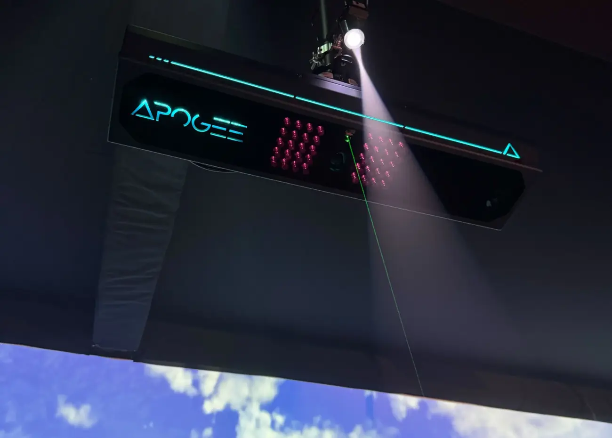

01 / OVERHEAD GOLF TRACKING
APOGEE
An overhead launch monitor for a dedicated golf bay. Keep the hitting area open while right- and left-handed golfers share the same space.
Club and ball insight
Measures club and ball data without specialty golf balls or marked clubs.
See the strike
Impact replay helps you review how the club meets the ball.
Connected to E6
Bring measured shots into course play, practice, and game-improvement tools.
Plan your setup
Plan ceiling mounting, a hitting area, projection, and a compatible computer and software configuration.